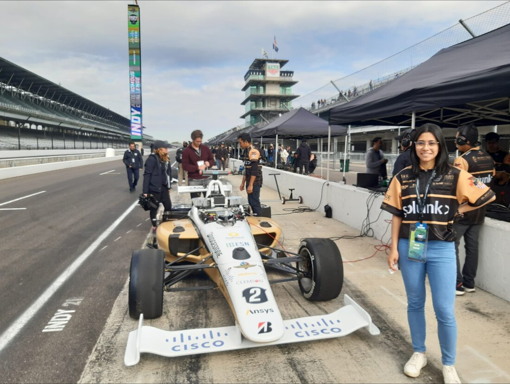

The challenge
Make an autonomous Dallara AV-21 follow its planned racing line precisely and stably at high speed, where a small control error turns into meters of deviation, and where the controller has to behave the same in simulation and on the real track.
The approach
Design the longitudinal and lateral control with PID and ADRC, tune it in MATLAB/Simulink, and prove every controller in simulation before it ever reaches the physical car.
Model & tune
PID and ADRC designed and tuned in MATLAB/Simulink
Implement
Ported from Ansys SCADE to Python, behaviour kept consistent
Validate in sim
Closed-loop runs in VRXperience and LGSVL before the real car
Run on track
Exercised on the real AV-21 at the Indianapolis Motor Speedway
From zero to hands-on
My hardest fight was not control theory, it was the toolchain. I had no Linux, ROS or GitHub experience and my English was still weak. Getting colcon build to compile every package in the workspace meant teaching myself all of it from scratch, and I kept at it until the full workspace built and ran. That is the moment I went from theory to genuinely hands-on robotics engineering.

A longitudinal and lateral control stack validated in simulation and exercised on the real Dallara AV-21 at the Indianapolis Motor Speedway, hands-on field testing at one of the most demanding autonomous-driving venues, and a co-authored technical paper. During my bachelor's, a 1:10 Jetson Nano model (ROS2, camera, encoders) prototyped the same PID control at small scale.
- MATLAB/Simulink
- Ansys SCADE
- Python
- ROS2
- PID
- ADRC
- NVIDIA Jetson Nano
- VRXperience
- LGSVL